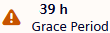
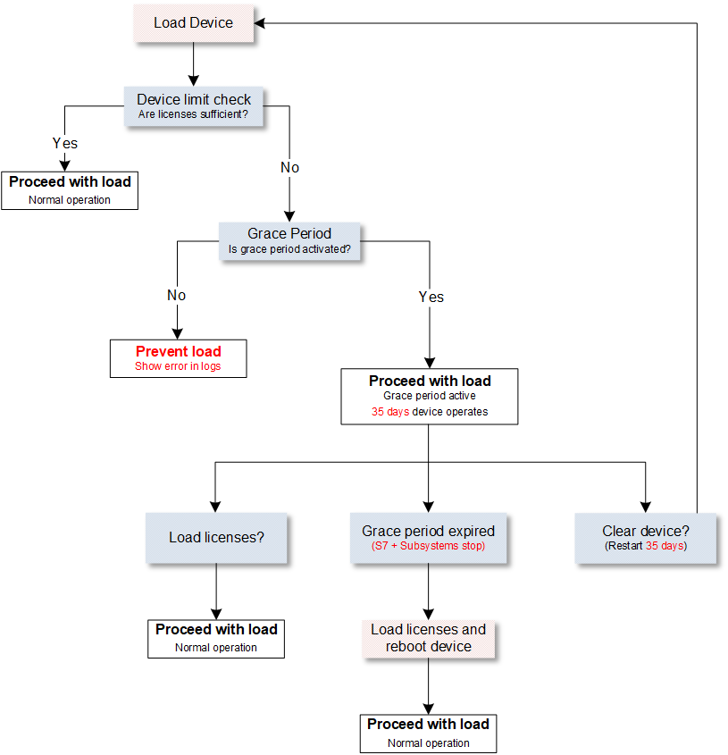

Frequently asked questions for embedded licensing
Question | Answer | Explanation |
|---|---|---|
Do I have to enter the serial number when ordering so that the license is unique? | No | Serial numbers are only required for activation. |
Can I activate the activation ID in the office? | Yes | It is possible to add and activate a license in the office, if the serial number of a device is already known (from a device upload). |
What about the licenses when a device is damaged and needs to be replaced by a new device? As a service technician, can I put the device into operation without a license (for example, outside office hours)? | Yes | If the old activation ID is known, the license can be reactivated with LMS. Otherwise, the grace period can be used to bridge the time until the new license is available. |
What if the number of datapoints exceeds the license? | > | In the Support grace period (activated with the check box), the device will function normally, even if too few data points are licensed. Note: If the Support grace period check box is cleared, a download cannot be performed. |
What happens if I remove a license file, and the number of licensed data points is no longer sufficient for the device? | > | In the Support grace period (activated with the check box), the device will function normally, even if too few data points are licensed. Note: If the Support grace period check box is cleared, a download cannot be performed. |
Is there an error message if the device is not working properly because of the license? | Yes | A message is triggered so that the user is informed that the existing license is only valid for a limited period and the message is forwarded to the recipients using the notification class or displayed in the Web interface.  |
Is there a report function for the entire project so that I can see the licenses used? | Yes | A license report can be created for one or more devices. If a device has more than one license, all licenses are displayed in the report. |
Can I reactivate a returned license for the same device? | Yes | You can use the returned license for the same device or a different one, there is no restriction. |
Can I use a license twice (for example, in another project)? | No | If you try to activate a license a second time, an error occurs in ABT site. As an Internet connection is required for activation, LMS checks the validity of the license. |
How to activate a license without an Internet connection, for example, in a protected customer area. | Yes | Use the ABT Site offline workflow. |
How do I return a license without an Internet connection? | > | Contact your local Siemens support or use the ABT Site offline workflow. |
How many data points are included with the purchase of a PXC5.E003 device? | = | 500 data points. Details see: |
How many data points can I purchase with an additional license? | = | Up to 1500 data points in tranches of 300 data points or directly a 1500 data point license. Details see: |
What is the maximum number of data points I can load in a PXC5.E003 device? | = | 2000 data points. (5 license file x 300 data points + 500 data points free = maximum of 2000 data points) Details see: |
Is the license part of the project backup? | Yes | Licenses are part of the backups you can perform with ABT Site. |
For offline activation, do we need the same ABT version on both PC? | Yes | Offline activation is supported from ABT Site 6.1 onwards. The recommendation is to have the same ABT Site version on both PCs. |
Does ABT Site show the grace period status? | No | In ABT Site, there is no indication for the grace period. The grace period is shown on the Web interface and an event message is forwarded to Desigo CC, if available. |
Does PXC7 have a license support? | No | With ABT Site 6.1, the PXC7 does not support licensing. |
What is the grace period?
- The grace period is activated with the Support grace period check box.
- If no license is available, the control program will continue to run without restriction during the grace period.
- The grace period also works if there are too few data points available for the device.
- The grace period is set to 35 days. A valid license must be loaded into the device during this time.
- If no valid license is loaded, the control program, all subsystems like TX-IO, Onboard-IO, Modbus, M-Bus and KNX PL-Link stop after 35 days and the systems are blocked.
- During the grace period, a device reboot can be carried out as often as necessary. The grace period of 35 days is not interrupted or extended by the reboot process.
- The license object displays an alarm if the number of data points is insufficient. The remaining time and the status of the grace period can also be displayed.
Note: There is no further warning about the expiration of the grace period. - The grace period starts when the device is connected to the power supply and calculated every 5 minutes.
Note: The 35-day grace period only counts down when the device is powered on. If the device is off, the countdown pauses. - If the 35-day grace period is not sufficient during commissioning, a Clear device or a Clear application procedure can be performed. After downloading the control program again, a new grace period starts. Any parameter changes made between the upload of the device data and the Clear device procedure will be lost.
What to do when the grace period is over?
- Perform a Clear device and start from scratch, the grace period starts again.
- Perform a Clear application, this will remove all integrated data points.
- Load fewer datapoints, so that the device is sufficiently licensed.
- - After the load operation, an automatic reboot will be triggered by ABT Site.
- - After the reboot, the control program must be started again manually.
- - If the load is performed via a Play operation, the automatic reboot cannot be performed by ABT Site, the user must Pause and reboot manually.
- Load more licenses, so that the device is sufficiently licensed.
- - After that load operation, an automatic reboot will be triggered by ABT Site.
- - After the reboot, the control program must be started again manually.
- - If the load is performed via a Play operation, the automatic reboot cannot be performed by ABT Site, the user must Pause and reboot manually.
Grace period functionality sequence
In order for the grace period to be executed, various conditions must be met, such as:
- Is the grace period in ABT Site activated?
- Are there insufficient licenses available?
- Has the 35-day grace period expired?
The diagram shows the corresponding behavior in the PXC5.E003 device.
